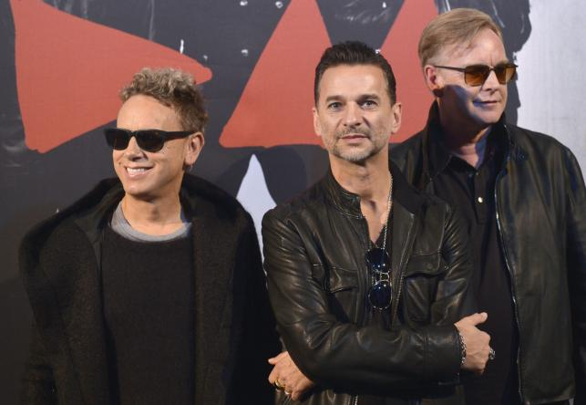

Depeche Mode
Brytyjska grupa muzyczna z kręgu elektronicznego popu, która powstała w 1980 w Basildon w Wielkiej Brytanii.
Nazwa grupy powstała na podstawie inspiracji francuskim magazynem mody, zasugerował ją Dave Gahan.
Powstanie Depeche Mode poprzedzała grupa Composition of Sound.
W 2006 zespół zdobył statuetkę MTV Europe Music Awards w kategorii Najlepszy zespół.

Copyright Depeche Mode FanPage 2013. Wszelkie prawa zastrzeżone.